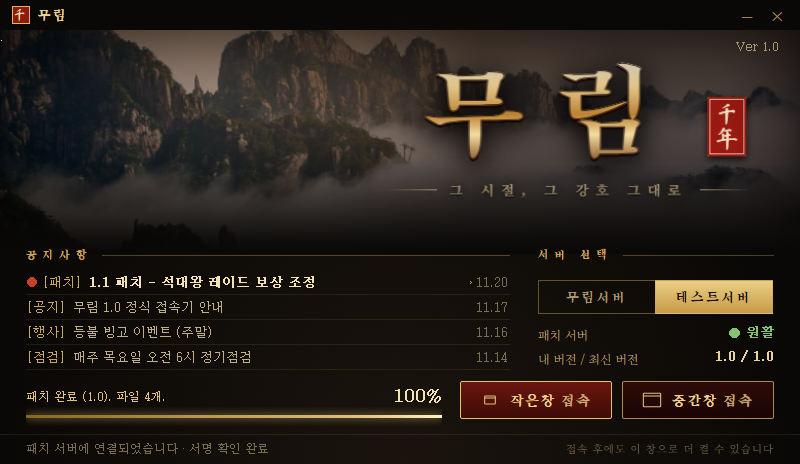
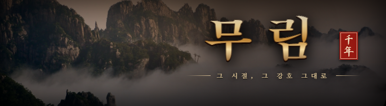

강호의 협객 여러분, 무림 운영진입니다.
오늘부터 새 접속기 '천년무림'으로 게임을 시작하실 수 있습니다. 접속기가 패치를 자동으로 받고, 무림서버와 테스트서버 중 원하는 곳으로 바로 접속해 줍니다.

접속기가 "패치 서버에 연결하지 못했습니다"라고 하면 인터넷 연결을 확인한 뒤 안내 문구를 눌러 다시 시도해 주세요.
게임 파일이 손상되면 접속기가 자동으로 원본으로 되돌립니다.

그 시절, 그 강호 그대로. 강호에서 뵙겠습니다.